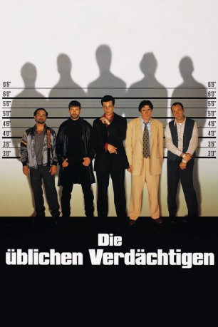

Auszeichnungen: 2 Oscars gewonnen 2 BAFTA-Awards gewonnen
 gesehen am 16.11.2016
gesehen am 16.11.2016Alternativ: The Usual Suspects
Auszeichnungen: 2 Oscars gewonnen 2 BAFTA-Awards gewonnen gesehen am 16.11.2016
 
 IMDB-Wertung: 8.6 / 10
IMDB-Wertung: 8.6 / 10  IMDB-TOP-Platzierung: 29
IMDB-TOP-Platzierung: 29  Metascore:
Metascore: 
Nach einem Massaker am Hafen erzählt der Krüppel Roger "Verbal" Kint seine Geschichte: Einige Wochen zuvor suchte die Polizei für eine Gegenüberstellung wegen eines gestohlenen Lastwagens fünf Kriminelle zusammen, neben Kint noch den Ex-Cop Keaton, den Sprengstoffspezialisten Hockney, sowie die Profi-Räuber McManus und Fenster. Aus Rache tun sich die Männer zusammen und drehen ein kleines Ding. Keiner ahnt, daß sie damit dem großen Unbekannten im Hintergrund auf die Füße treten, der Verbrecherlegende Keyser Soze, von dem niemand weiß, ob es ihn überhaupt gibt. Doch Soze zieht schon längst die Fäden im Hintergrund zu einem Netz, aus dem scheinbar niemand entkommen kann. Und so werden die fünf üblichen Verdächtigen zu Erfüllungsgehilfen in einem Spiel, das niemand durchschauen kann.
Jahr: 1995
Dauer: 106 Minuten
FSK: 16
Land: USA Studio: ITonspuren: DD2.0 - ,
Untertitel:
Auflösung: 1080p (1920×816) Größe: 8263 MB
Genre: Krimi, Mystery, Thriller
Regisseur:  Bryan Singer
Bryan Singer
Drehbuch: Christopher McQuarrie
Soundtrack: John Ottman
Darsteller:
 Stephen Baldwin als McManus
Stephen Baldwin als McManus Gabriel Byrne als Keaton
Gabriel Byrne als Keaton Benicio Del Toro als Fenster
Benicio Del Toro als Fenster Kevin Pollak als Hockney
Kevin Pollak als Hockney Kevin Spacey als Verbal
Kevin Spacey als Verbal Chazz Palminteri als Dave Kujan
Chazz Palminteri als Dave Kujan Pete Postlethwaite als Kobayashi
Pete Postlethwaite als Kobayashi Giancarlo Esposito als Jack Baer
Giancarlo Esposito als Jack Baer Dan Hedaya als Jeff Rabin
Dan Hedaya als Jeff Rabin Paul Bartel als Smuggler
Paul Bartel als Smuggler Jack Shearer als Renault
Jack Shearer als Renault Christine Estabrook als Dr. Plummer
Christine Estabrook als Dr. Plummer Clark Gregg als Dr. Walters
Clark Gregg als Dr. Walters Louis Lombardi als Strausz
Louis Lombardi als Strausz Frank Medrano als Rizzi
Frank Medrano als Rizzi Vito D'Ambrosio als Arresting Officer
Vito D'Ambrosio als Arresting Officer Castulo Guerra als Arturro Marquez
Castulo Guerra als Arturro Marquez Peter Greene als Redfoot the Fence , uncredited
Peter Greene als Redfoot the Fence , uncreditedDatei: X:\1995\Üblichen Verdächtigen, Die (1995, FSK16, 1920x816).mkv seit 14.02.2015
Festplatte: HD 1992-1995
 Es gibt insgesamt 85 Filme in der Gruppe '1995'
Es gibt insgesamt 85 Filme in der Gruppe '1995'